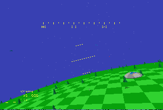
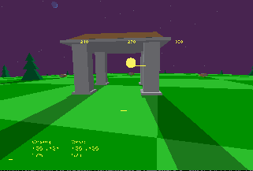

|
Way back in the mists of time, you may recall the modern miracle of the
vector space game. Boasting such titles as Elite, Starglider and
Mercenary, the genre took the 8-bit generation beyond what was believed
possible, delivering entire worlds or star systems to the home computer.
Well, now it's the PC's turn to be stretched, as Christian Schüler
releases the latest alpha of his technically astonishing Space Glider.
Currently on version 0.3, Space Glider allows you to roam freely across
an entire solar system. This in itself is an average idea, but the
execution is incredible. Planets spin and orbit the sun, with moons
orbiting the planets. The solar system is similar to our own, including
gas giants, ringed planets as well as the standard Earth-like world.
The best thing about Space Glider so far, though, is the lighting. The
sun rises and sets just as you'd expect it to, with the colour of the
sky changing, as well as the shadows cast by objects on the ground,
lengthening as the day goes on, and changing direction as the sun passes
overhead. You can even experience eclipses!
You can download the current release from the Christian's home page, at
http://members.tripod.de/cschueler/
|